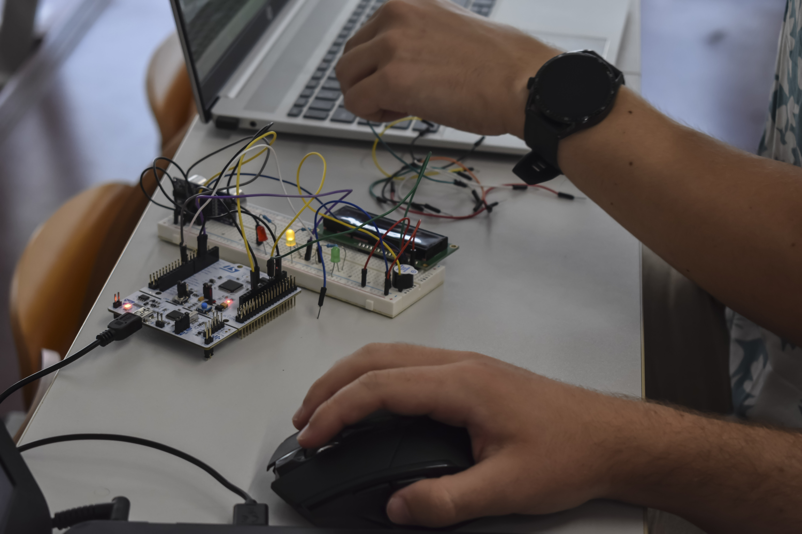

From signals to decisions
The programme linked the layers of an autonomous system. At the hardware level, STM32 and Arduino Uno Q exercises used proximity detection to develop an intuition for sensing, timing and embedded constraints. At the perception level, participants built and labelled image datasets before training a Red Bull can detector with Edge Impulse.
Systems integration
ROS 2 sessions made distributed robotics concrete through nodes, topics and messages. Seeing those abstractions alongside the work of SmartMe and the Formula Student Messina team gave the tools a clear engineering context: autonomy is a chain of interfaces, not a single algorithm.


Takeaway
The course strengthened a systems mindset: robust autonomy depends on the quality of every transition—from sensor observation to embedded treatment, perception, communication and vehicle-level behaviour.